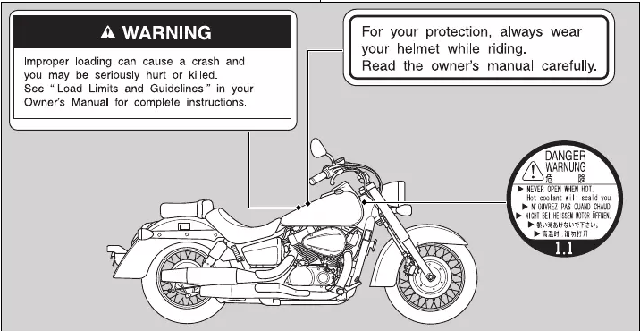
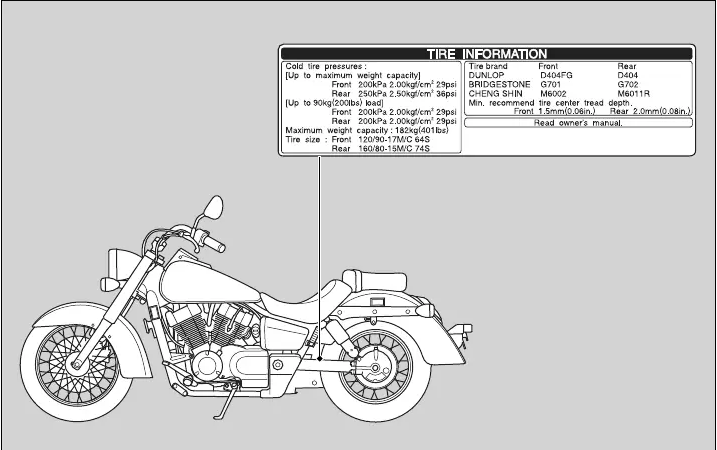

Safety Guidelines
Follow these guidelines to enhance your safety:
● Perform all routine and regular inspections specified in this manual.
● Stop the engine and keep sparks and flames away before filling the fuel tank.
● Do not run the engine in enclosed or partly enclosed areas. Carbon monoxide in exhaust gases
is toxic and can kill you.
Always Wear a Helmet
It's a proven fact: helmets and protective apparel significantly reduce the number and severity
of head and other injuries. So always wear an approved helmet and protective apparel.
Before Riding
Make sure that you are physically fit, mentally focused and free of alcohol and drugs. Check that you
and your passenger are both wearing an approved helmet and protective apparel. Instruct your passenger
on holding onto the seat strap or your waist, leaning with you in turns, and keeping their feet on the
footpegs, even when the vehicle is stopped.
Take Time to Learn & Practice
Even if you have ridden other vehicles, practice riding in a safe area to become familiar with how this
vehicle works and handles, and to become accustomed to the vehicle's size and weight.
We recommend that all riders take a certified course approved by the Motorcycle Safety Foundation (MSF) or a
state approved training course. New riders should start with the basic course, and even experienced riders
will find the advanced course beneficial. For information about the MSF training course nearest you, call the
national toll-free number:(800) 446-9227. Other riding tips can be found in the You and Your Motorcycle Riding
Tips booklet that came with your vehicle.
Ride Defensively
Always pay attention to other vehicles around you,
and do not assume that other drivers seeyou. Be prepared to stop quickly or perform anevasive maneuver.
Make Yourself Easy to See
Make yourself more visible, especially at night, by wearing bright reflective clothing,
positioning yourself so other drivers can see you, signaling before turning or changing lanes, and using your
horn when necessary.
Ride within Your Limits
Never ride beyond your personal abilities or faster than conditions
warrant. Fatigue and inattention can impair your ability to use good judgment and ride safely.
Don't Drink or Use Drugs and Ride
Alcohol or drugs and riding don't mix. Even one alcoholic drink can reduce your ability to respond to changing
conditions, and your reaction time gets worse with every additional drink. The same is true for drug use. Don't
drink or use and ride, and don't let your friends do it either.
Keep Your Honda in Safe Condition
It's important to keep your vehicle properly maintained and in safe riding condition. Inspect your vehicle before
every ride and perform all recommended maintenance. Never exceed load limits (2 P. 15), and do not modify your vehicle
or install accessories that would make your vehicle unsafe.
If You are Involved in a Crash
Personal safety is your first priority. If you oranyone else has been injured, take time to assess the severity of the
injuries and whether it is safe to continue riding. Call for emergency assistance if needed. Also follow applicable laws
and regulations if another person or vehicle is involved in the crash. If you decide to continue riding, first turn the
ignition switch to the OFF position, and evaluate the condition of your vehicle. Inspect for fluid leaks, check the tightness
of critical nuts and bolts, and check the handlebar, control levers, brakes, and wheels. Ride slowly and cautiously. Your vehicle
may have suffered damage that is not immediately apparent. Have your vehicle thoroughly checked at a qualified service facility as soon as possible.
Carbon Monoxide Hazard
Exhaust contains poisonous carbon monoxide, a colorless, odorless gas. Breathing carbon monoxide can cause loss of consciousness and may lead to death.
If you run the engine in confined or even partly enclosed area, the air you breathe could contain a dangerous amount of carbon monoxide. Never run your
vehicle inside a garage or other enclosure.
WARNING
Running the engine of your vehicle while in an enclosed or even partially enclosed area can cause a rapid build-up of toxic carbon monoxide gas. Breathing this colorless, odorless gas can quickly cause unconsciousness and lead to death. Only run your vehicle's engine when it is located in a well ventilated area outdoors.
Safety Labels Safety and information labels on your vehicle provide important safety information and may warn you of potential hazards that could cause serious injury. Read these labels carefully and don't remove them. If a label comes off or becomes hard to read, contact your dealer for a replacement.


Safety Precautions
● Ride cautiously and keep your hands on the handlebar and feet on the footpegs.
● Keep passenger's hands onto the seat strap or your waist, passenger's feet on the footpegs while riding.
● Always consider the safety of your passenger, as well as other drivers and riders.
Protective Apparel
Make sure that you and any passenger are wearing an approved helmet, eye protection, and high-visibility protective clothing. Avoid wearing loose clothes that could get caught on any part of the vehicle. Ride defensively in response to weather and road conditions.
Helmet
Should be safety-standard certified, high-visibility, and the correct size for your head.
● Must fit comfortably but securely, with thechin strap fastened.
● Face shield with unobstructed field of visionor other approved eye protection.
Look for a DOT (Department of Transportation) certification label on any helmet you buy.
WARNING
Not wearing a helmet increases the chance of serious injury or death in a crash. Make sure that you and any passenger always wear an approved helmet and protective apparel.
Gloves
Full-finger leather gloves with high abrasion resistance
Boots or Riding Shoes
Sturdy boots with non-slip soles and ankle protection
Jacket and Pants
Protective, highly visible, long-sleeved jacket and durable long pants for riding (or aprotective suit)
Riding Precautions
Break-in Period
During the first 300 miles (500 km) of running, follow these guidelines to ensure your vehicle's future reliability and performance.
● Avoid full-throttle starts and rapid acceleration.
● Avoid hard braking and rapid down-shifts.
● Ride conservatively.
Brakes
Observe the following guidelines:
● Avoid excessively hard braking and downshifting.
● Sudden braking can reduce the vehicle's stability.
● Where possible, reduce speed beforeturning; otherwise you risk sliding out.
● Exercise caution on low traction surfaces.
● The tires slip more easily on such surfaces and braking distances arelonger.
● Avoid continuous braking.
● Repeated braking, such as when descending long, steep slopes can seriously overheat the brakes, reducing their effectiveness. Use engine braking with intermittent use of the brakes toreduce speed.
● For full braking effectiveness, operate both the front and rear brakes together.
Combined ABS
VT750CS
Your vehicle's rear brake system is linked to the front brake. This means that operating the rear brake pedal applies the rear brake and aportion of the front brake. Operating the front brake lever applies only the front brake. For full braking effectiveness, operate both the front and rear brakes together. This model is also equipped with an Anti-lock Brake System (ABS) designed to help prevent the brakes from locking up during hard braking.
● ABS does not reduce braking distance. Incertain circumstances, ABS may result in alonger stopping distance.
● ABS does not function at speeds below 6mph (10 km/h).
● The brake lever and pedal may recoil slightly when applying the brakes. This is normal.
● Always use the recommended tires to ensure correct ABS operation.
Engine Braking Engine braking helps slow your vehicle down when you release the throttle. For further slowing action, downshift to a lower gear. Use engine braking with intermittent use of the brakes to reduce speed when descending long, steep slopes.
Wet or Rainy Conditions Road surfaces are slippery when wet, and wet brakes further reduce braking efficiency. Exercise extra caution when braking in wet conditions. If the brakes get wet, apply the brakes while riding at low speed to help them dry.
Parking ● Park on a firm, level surface.
● If you must park on a slight incline or loose surface, park so that the vehicle cannot move or fall over.
● Make sure that high-temperature parts cannot come into contact with flammable materials.
● Do not touch the engine, muffler, brakes and other high-temperature parts until they cool down.
● To reduce the likelihood of theft, always lock the handlebar and remove the key when leaving the vehicle unattended. Use of an anti-theft device is also recommended.
Parking with the Side Stand
1. Stop the engine.
2. Push the side stand down.
3. Slowly lean the vehicle to the left until its weight rests on the side stand.
4.Turn the handlebar fully to the left - Turning the handlebar to the right reduces stability and may cause the vehicle to fall.
5.Turn the ignition switch to the OFF position and remove the key.
6.Lock the steering.
Refueling and Fuel Guidelines
Follow these guidelines to protect the engine, fuel system and catalytic converter:
● Use only unleaded gasoline.
● Use the recommended octane number. Using lower octane gasoline will result in decreased engine performance.
● Do not use fuels containing a high concentration of alcohol.
● Do not use stale or contaminated gasoline or an oil/gasoline mixture.
● Avoid getting dirt or water in the fuel tank.